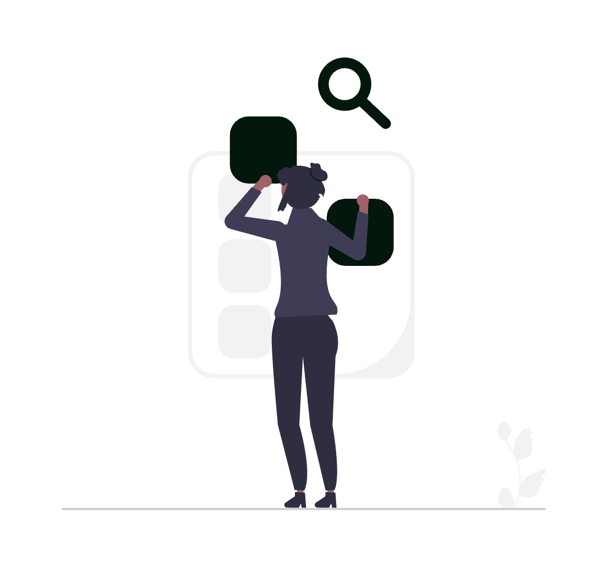

Google Search Console (GSC) este instrumentul oficial și gratuit prin care Google îți comunică direct cum „vede” site-ul cabinetului tău: pentru ce căutări apari, pe ce poziții, ce pagini sunt indexate, ce probleme tehnice te frânează și cine face link către tine. Spre deosebire de instrumentele terțe care estimează, Search Console îți arată date reale, măsurate de Google. Pentru un cabinet de avocatură care vrea clienți din căutările locale, GSC nu este opțional – este sursa de adevăr a vizibilității tale online.
Acest ghid acoperă funcționalitățile reale ale platformei, cu setări, configurații și utilizări specifice pentru practica juridică din România.
1. Adăugarea și verificarea proprietății: alege tipul corect
Primul pas este să adaugi site-ul ca „proprietate” (property) în Search Console. Google îți oferă două tipuri, iar alegerea contează:
- Domain property (proprietate de tip domeniu): acoperă toate variantele –
http,https, cu și fărăwww, plus toate subdomeniile (blog.cabinet.ro,cazuri.cabinet.ro). Verificarea se face exclusiv prin înregistrare DNS (un record TXT adăugat la furnizorul tău de domeniu). Este varianta recomandată pentru majoritatea cabinetelor, pentru că nu ratezi date din cauza unei variante de URL neacoperite. - URL-prefix property (proprietate de tip prefix URL): acoperă o singură variantă exactă (ex.
https://www.cabinet.ro/). Permite mai multe metode de verificare și este utilă dacă vrei să separi, de exemplu, subdomeniul de blog de site-ul principal.
Metode de verificare a proprietății URL-prefix:
| Metodă | Cum funcționează | Recomandare |
|---|---|---|
| Fișier HTML | Încarci un fișier furnizat de Google în rădăcina site-ului | Stabilă; nu o șterge ulterior |
| Tag HTML | Adaugi un <meta> în secțiunea <head> |
Simplă dacă ai acces la cod |
| Google Analytics | Folosește contul GA4 existent | Rapidă dacă ai deja Analytics |
| Google Tag Manager | Folosește containerul GTM existent | Utilă dacă deja folosești GTM |
| Înregistrare DNS | Record TXT la furnizorul de domeniu | Cea mai robustă |
Recomandare practică: creează o Domain property verificată prin DNS pentru imaginea completă și, opțional, o URL-prefix property pentru blogul juridic, dacă vrei rapoarte separate pentru acea secțiune.
2. Raportul Performanță: pentru ce te găsesc clienții
Raportul Performanță > Rezultate căutare (Performance > Search results) este inima Search Console. Aici vezi exact pentru ce căutări apare cabinetul tău în Google.
Cele patru metrici fundamentale:
- Afișări (Impressions): de câte ori a apărut un link al site-ului tău în rezultate. Indică vizibilitatea – pentru câte căutări ești măcar luat în considerare de Google.
- Clicuri (Clicks): de câte ori a dat cineva click pe rezultatul tău.
- CTR (rata de click): clicuri împărțite la afișări. Un CTR mic la afișări mari înseamnă că apari, dar titlul sau descrierea nu conving.
- Poziția medie (Average position): poziția medie la care ai apărut pentru căutările respective.
Cele șase dimensiuni de analiză (tab-urile din raport):
- Interogări (Queries): cuvintele exacte pe care le-au tastat oamenii când ți-au văzut site-ul. Cea mai valoroasă filă pentru un avocat – îți arată limbajul real al clienților (ex.
cât costă un divorț cu avocat,avocat contestație decizie de concediere). - Pagini (Pages): ce URL-uri ale tale au generat afișări și clicuri. Vezi care pagini de practică performează și care nu.
- Țări (Countries): util ca să confirmi că traficul vine din România, nu din regiuni irelevante.
- Dispozitive (Devices): desktop vs. mobil vs. tabletă. Pentru servicii juridice locale, ponderea mobilului este de regulă majoritară.
- Aspect în căutare (Search appearance): dacă apari cu elemente speciale (rezultate îmbogățite, breadcrumbs etc.).
- Date: evoluția în timp; activează modul de comparație pentru a vedea tendințele.
Setare esențială: GSC afișează implicit ultimele 3 luni. Extinde intervalul la 16 luni (maximul disponibil) pentru a observa sezonalitatea și tendințele reale, nu fluctuațiile de scurtă durată.
3. Filtre și expresii regulate (regex): analiză avansată a interogărilor
Adevărata putere a raportului Performanță stă în filtre. Pe lângă filtrele simple („conține”, „nu conține”, „exact”), Search Console acceptă expresii regulate (regex) atât pentru interogări, cât și pentru pagini.
Exemple practice de filtre regex pentru un cabinet:
- Grupează toate căutările cu intenție de preț:
cât costă|preț|onorariu|tarif - Izolează căutările pe orașul tău:
cluj|cluj-napoca - Vezi toate întrebările (conținut ideal pentru blog și FAQ):
^(cum|ce|când|cât|de ce|cine|unde) - Filtrează o arie de practică:
divor[țt]|custodie|pensie aliment
Cum aplici: în raportul Performanță, apasă + Nou (New) > Interogare (Query) sau Pagină (Page) > selectează Personalizat (regex) din meniul derulant și introdu expresia.
Mod de comparație: orice filtru poate fi pus în comparație (perioadă vs. perioadă, dispozitiv vs. dispozitiv, țară vs. țară). Astfel demonstrezi concret evoluția: de exemplu, clicurile pe paginile de drept penal în trimestrul curent față de cel anterior.
4. URL Inspection: diagnoza fiecărei pagini
Instrumentul Inspectare URL (URL Inspection), accesibil din bara de căutare de sus, îți arată cum vede Google o anumită pagină.
Ce afli pentru un URL:
- Dacă pagina este indexată și eligibilă să apară în Google.
- Data ultimei accesări (crawl) de către Googlebot și starea acesteia.
- URL-ul canonic ales de Google (poate diferi de cel declarat de tine).
- Dacă pagina este acoperită de un sitemap.
- Eventuale probleme de rezultate îmbogățite (structured data) detectate pe pagină.
Două acțiuni-cheie:
- Testează URL-ul live (Test live URL): verifică pagina în timp real, util după ce ai modificat conținutul sau ai reparat o eroare.
- Solicită indexarea (Request indexing): după ce publici o pagină nouă (o nouă pagină de serviciu sau un articol de blog) sau o actualizezi substanțial, trimite-o spre indexare ca să accelerezi apariția în Google.
Recomandare: după fiecare articol nou pe blogul juridic, inspectează URL-ul și solicită indexarea. Nu garantează indexarea instant, dar grăbește procesul față de așteptarea unui crawl natural.

5. Raportul Indexare > Pagini: ce intră (și ce nu) în Google
Secțiunea Indexare > Pagini (Indexing > Pages) îți arată câte pagini sunt indexate și, mai important, de ce anume nu sunt indexate altele.
Stări frecvente „Neindexat (Not indexed)” la site-urile de cabinet:
- Pagină duplicată, fără canonic selectat de utilizator: aceeași pagină accesibilă pe mai multe URL-uri. Definește un canonic clar.
- Pagină alternativă cu etichetă canonică corectă: normal, nu necesită acțiune – Google a ales corect o altă versiune.
- Descoperită – momentan neindexată (Discovered – currently not indexed): Google știe de pagină, dar nu a accesat-o încă. Apare des la conținut nou sau la site-uri cu autoritate mică.
- Accesată (crawled) – momentan neindexată: Google a văzut pagina, dar a decis să nu o indexeze (de obicei conținut subțire sau de calitate redusă). Semnal că pagina trebuie îmbunătățită.
- Blocat de robots.txt sau exclus printr-o etichetă „noindex”: verifică dacă blocarea este intenționată.
- Soft 404: pagina returnează cod 200, dar conținutul pare „gol” pentru Google.
Utilizare practică: verifică lunar acest raport. Dacă paginile-cheie de servicii (drept civil, drept penal, dreptul muncii) apar drept neindexate, pierzi clienți care nu te vor găsi niciodată pentru acele căutări.
6. Sitemap-uri: ajută Google să-ți descopere paginile
Un sitemap XML este lista structurată a paginilor pe care vrei să le indexeze Google. În Indexare > Sitemap-uri (Sitemaps) îți trimiți sitemap-ul și verifici starea lui.
Bune practici pentru un cabinet:
- Trimite URL-ul sitemap-ului (de obicei
https://cabinet.ro/sitemap.xml). - Include toate paginile importante: pagina principală, paginile de practică, pagina „Despre”, „Contact”, articolele de blog și eventualele studii de caz.
- Verifică în raport numărul de pagini descoperite față de cele trimise – discrepanțele indică probleme.
- Actualizează sitemap-ul automat la fiecare pagină nouă publicată, astfel încât Google să fie informat rapid.
De știut: trimiterea sitemap-ului nu garantează indexarea, dar este modul oficial prin care îi semnalezi lui Google ce conținut consideri prioritar.
7. Eliminări (Removals): control temporar asupra rezultatelor
Instrumentul Indexare > Eliminări (Removals) îți permite să ascunzi temporar (aproximativ 6 luni) un URL din rezultatele Google.
Când este util pentru un avocat:
- Ai publicat din greșeală o pagină cu date confidențiale ale unui client și ai nevoie să dispară urgent din rezultate cât rezolvi cauza la nivel de site (ștergere,
noindex, restricționare acces). - O pagină veche, retrasă, încă apare în căutări.
Atenție: eliminarea este temporară. Pentru o soluție permanentă trebuie fie să ștergi pagina (cod 404/410), fie să o marchezi noindex, fie să restricționezi accesul. Folosește și fila Conținut învechit (Outdated content) pentru a actualiza fragmentele afișate de Google după o modificare.
8. Experiență pagină și Core Web Vitals: viteza contează
Secțiunea Experiență (Experience) include raportul Core Web Vitals și raportul HTTPS.
Cele trei semnale Core Web Vitals:
- LCP (Largest Contentful Paint): cât durează până se afișează conținutul principal. Țintă: sub 2,5 secunde.
- INP (Interaction to Next Paint): cât de rapid răspunde pagina la interacțiuni (click-uri, atingeri). Țintă: sub 200 ms. (INP a înlocuit fostul FID în 2024.)
- CLS (Cumulative Layout Shift): cât de mult „sare” aspectul paginii în timpul încărcării. Țintă: sub 0,1.
Raportul HTTPS: confirmă că paginile sunt servite securizat. Pentru un site juridic, securitatea conexiunii este obligatorie – atât pentru încrederea clienților, cât și ca semnal pentru Google.
Utilizare practică: datele Core Web Vitals provin din experiența reală a utilizatorilor (Chrome User Experience Report). Dacă paginile apar la „URL-uri slabe (Poor)” sau „necesită îmbunătățiri (Needs improvement)”, optimizează imaginile, reducerea codului și serverul – o pagină lentă alungă deopotrivă clienții și pozițiile.
9. Rezultate îmbogățite (structured data): apariții speciale în Google
Dacă site-ul tău include date structurate (schema.org în format JSON-LD), Search Console afișează rapoarte dedicate în secțiunea Îmbunătățiri (Enhancements), de exemplu Breadcrumbs (firul Ariadnei).
Tipuri de date structurate relevante pentru un cabinet:
- LocalBusiness / LegalService: nume, adresă, telefon (NAP), program, zonă deservită – ajută la vizibilitatea locală.
- BreadcrumbList: navigarea ierarhică afișată în rezultate.
- Article: pentru articolele de blog juridic.
- FAQPage: marcarea întrebărilor frecvente (afișarea ca rezultat îmbogățit este însă limitată de Google și nu este garantată).
Validare: după implementare, folosește Inspectare URL sau testul de rezultate îmbogățite (Rich Results Test) al Google, iar rapoartele din „Îmbunătățiri” îți vor semnala eventualele erori sau avertismente de remediat.
10. Raportul Link-uri: cine îți construiește autoritatea
Raportul Link-uri (Links) arată profilul de legături al site-ului, împărțit în două:
Link-uri externe (External links):
- Pagini cele mai accesate (Top linked pages): ce pagini ale tale primesc cele mai multe link-uri externe.
- Site-uri care creează link-uri (Top linking sites): domeniile care trimit cele mai multe legături spre tine.
- Text de ancorare (Top linking text): cuvintele folosite ca text de link către site-ul tău.
Link-uri interne (Internal links):
- Paginile tale cu cele mai multe (și cele mai puține) legături interne. Paginile importante de servicii ar trebui să primească multe link-uri interne din articole și din meniu; paginile cu zero link-uri interne sunt „orfane” și greu de găsit.
Utilizare practică pentru avocați: verifică din ce surse provin link-urile externe – directoare juridice, barouri, publicații de specialitate, parteneri (notari, executori, contabili). Întărește, în paralel, structura de link-uri interne ca să direcționezi autoritatea spre paginile care aduc clienți.
11. Acțiuni manuale și probleme de securitate
Două rapoarte critice, de verificat periodic:
- Acțiuni manuale (Manual actions): dacă un evaluator Google a aplicat o penalizare manuală (ex. pentru link-uri nenaturale sau conținut spam). În mod ideal, acest raport spune „Nu au fost detectate probleme”. Dacă apare o acțiune, urmează instrucțiunile de remediere și trimite o cerere de reexaminare (reconsideration request).
- Probleme de securitate (Security issues): te alertează dacă site-ul a fost compromis (malware, conținut înșelător, hacking). Pentru un cabinet, un site marcat ca nesigur distruge instant încrederea – tratează orice alertă ca urgență.
12. Setări, utilizatori și permisiuni
În Setări (Settings) găsești configurări importante:
- Utilizatori și permisiuni (Users and permissions): adaugă colaboratori cu rol de Complet (Full), Restrâns (Restricted) sau Proprietar (Owner). Astfel, agenția care îți gestionează SEO sau un coleg de cabinet poate accesa datele fără să-ți partajezi contul personal Google.
- Verificarea proprietății (Ownership verification): vezi metodele active. Nu șterge fișierul/tag-ul de verificare, altfel pierzi accesul.
- Statistici de accesare (Crawl stats): câte cereri face Googlebot, timpul de răspuns al serverului și eventualele erori de accesare. Util pentru diagnostic tehnic.
- Asocieri (Associations): leagă Search Console de Google Analytics 4 și de Looker Studio pentru rapoarte combinate.
- Schimbarea adresei (Change of address): instrumentul oficial când migrezi pe un domeniu nou (ex. de la un domeniu vechi la unul cu numele actual al cabinetului).
13. Configurații avansate: export, Looker Studio și BigQuery
Pentru raportare și analiză la scară mai mare:
- Export rapid: orice raport poate fi exportat în Google Sheets, Excel sau CSV.
- Looker Studio: conectează Search Console pentru dashboard-uri vizuale, actualizate automat – ideale pentru a prezenta evoluția vizibilității partenerilor de cabinet, fără ca aceștia să intre în GSC.
- Bulk Data Export către BigQuery: pentru volume mari de date, poți configura un export zilnic complet în BigQuery, depășind limita de rânduri din interfața web. Util pentru cabinete mari sau pentru analize SEO aprofundate realizate de o agenție.
- Search Console Insights: un raport simplificat care combină datele din GSC (și GA4, dacă e conectat) într-o formă prietenoasă: care conținut atrage vizitatori, ce căutări sunt în creștere, cum te găsesc oamenii. Bun pentru o privire rapidă, fără jargon tehnic.
14. Tips & tricks care fac diferența
- Oportunități de CTR: în raportul Performanță, sortează interogările cu multe afișări dar CTR mic. Acolo apari, dar nu convingi – rescrie titlul (
<title>) și meta descrierea acelor pagini pentru a câștiga clicuri fără efort suplimentar de poziționare. - „Striking distance” (pozițiile 8–20): filtrează interogările cu poziția medie între 8 și 20. Sunt aproape de prima pagină – un mic efort de optimizare le poate aduce în Top 5.
- Idei de conținut din întrebări: filtrul regex pe interogări de tip întrebare îți oferă subiecte exacte de articole și întrebări pentru pagina FAQ, formulate în limbajul real al clienților.
- Validează reparațiile: după ce rezolvi o eroare de indexare sau Core Web Vitals, folosește butonul Validează remedierea (Validate fix) ca Google să reverifice și să închidă problema.
- Compară mereu perioade: nu privi cifrele izolat. Modul de comparație (lună vs. lună, an vs. an) transformă datele brute în tendințe pe care le poți acționa.
- Activează alertele pe email: GSC trimite automat notificări la probleme grave (scădere de indexare, acțiuni manuale, securitate). Asigură-te că ajung la adresa pe care o citești zilnic.
- Curăță paginile „crawled – not indexed”: dacă pagini importante apar aici, îmbunătățește-le substanțial (conținut mai amplu, mai util, link-uri interne) și solicită reindexarea.
- Monitorizează canonicalizarea: pentru paginile-cheie, verifică în URL Inspection ca „URL-ul canonic ales de Google” să fie cel dorit – discrepanțele pot dilua poziționarea.
Concluzie
Google Search Console este singura sursă oficială și gratuită care îți arată exact cum te poziționează Google: ce caută potențialii clienți când te găsesc, ce pagini funcționează, ce probleme tehnice îți reduc vizibilitatea și cine îți construiește autoritatea. Pentru un cabinet de avocatură, nu este un instrument „de specialiști” – este tabloul de bord al prezenței tale online.
Nu trebuie să devii expert SEO ca să folosești GSC eficient. Trebuie să verifici corect proprietatea, să citești lunar raportul Performanță și raportul de indexare, să trimiți sitemap-ul, să soliciți indexarea conținutului nou și să acționezi pe oportunitățile evidente (CTR slab, poziții 8–20, pagini neindexate).
Dacă vrei ca cineva să configureze, să monitorizeze și să acționeze pe datele din Search Console pentru cabinetul tău – de la indexare și viteză până la conținut și link-uri – echipa SOLON poate prelua întreaga strategie SEO, adaptată practicii tale juridice.